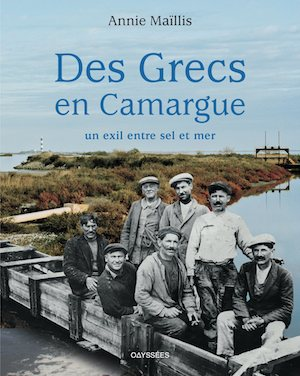

Le Livre
Des Grecs en Camargue évoque la vie des Grecs partis du Dodécanèse ou d’Asie Mineure pour les salines de Basse Camargue. Il restitue leur vie à la fois rude et chaleureuse, cette part de leur histoire mal connue, menacée d’oubli, sans négliger le présent de leurs descendants.
La diaspora grecque n’a fait l’objet que de quelques articles et d’aucun livre de fond contrairement aux autres communautés qui ont peuplé le pays. Le livre comble en partie cette lacune. Le lecteur peut le parcourir librement, sauter d’un chapitre de « La vie à Salin » à un des « Parcours de vie » si romanesques et parfois si douloureux.
Loin d’une étude sociologique théorique, Annie Maïllis offre une chronique vivante d’un groupe humain à la fois original par ses provenances diverses (Dodécanèse et Asie Mineure) et la qualité de ses membres (pour la plupart anciens pêcheurs d’éponges) et à la fois représentatif de tout exil avec ses souffrances et ses bonheurs
Destiné à un public diversifié, bien au-delà des Grecs, l’ouvrage de 250 pages est abondamment illustré car l’auteur a voulu incarner ces destins et donner vie au territoire comme aux hommes : photos anciennes d’un passé révolu, images d’amateur émouvantes ou d’artistes. Ainsi les belles photographies de Carle Naudot restituent le Salin-de-Giraud du début du XXème siècle, et celles – splendides – de Dimitri Harissiadis l’île de Kalymnos en 1950. Les photographies du présent permettent de mieux saisir mutations et évolutions : Claude Teisson et la jeune Grecque Marily Konstantinopoulou se sont attachés à les capter à travers les paysages ou les visages des Grecs de toute génération.
►Télécharger le bon de souscription pour acheter le livre.